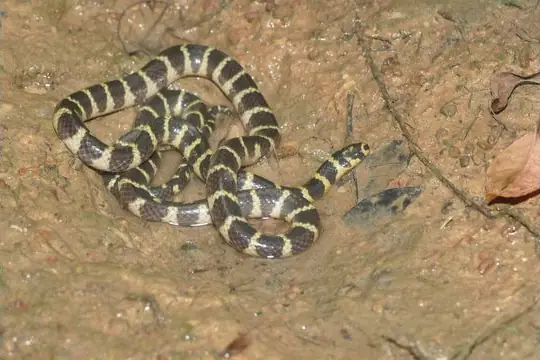

Snakes of Singapore
53 living snake species are recorded in Singapore in SnakeList: 16 venomous and 37 non-venomous, from 9 families.
- 53living species
- 16venomous
- 37non-venomous
- 9families
These totals count the unique living snake species SnakeList records in Singapore. A species counts if it is recorded anywhere in the country, so not every snake lives in every part of it.
Species
Showing 53 species
 Annulated Sea SnakeHydrophis cyanocinctus
Annulated Sea SnakeHydrophis cyanocinctus Asian Vine SnakeAhaetulla prasina
Asian Vine SnakeAhaetulla prasina Banded KraitBungarus fasciatus
Banded KraitBungarus fasciatus Barred Kukri SnakeOligodon signatus
Barred Kukri SnakeOligodon signatus Blackwater Mud SnakePhytolopsis punctata
Blackwater Mud SnakePhytolopsis punctata Blue Coral SnakeCalliophis bivirgatus
Blue Coral SnakeCalliophis bivirgatus Blue-necked KeelbackRhabdophis rhodomelas
Blue-necked KeelbackRhabdophis rhodomelas Boie's Many-Tooth SnakeSibynophis geminatus
Boie's Many-Tooth SnakeSibynophis geminatus
Cantor's Water SnakeCantoria violacea Common Wolf Snake (capucinus)Lycodon capucinus
Common Wolf Snake (capucinus)Lycodon capucinus Dog-toothed Cat SnakeBoiga cynodon
Dog-toothed Cat SnakeBoiga cynodon Eight-striped Kukri SnakeOligodon octolineatus
Eight-striped Kukri SnakeOligodon octolineatus Elegant BronzebackDendrelaphis formosus
Elegant BronzebackDendrelaphis formosus Equatorial Spitting CobraNaja sumatrana
Equatorial Spitting CobraNaja sumatrana Gold-ringed Cat Snake (dendrophila)Boiga dendrophila
Gold-ringed Cat Snake (dendrophila)Boiga dendrophila Gold-ringed Cat Snake (melanota)Boiga melanota
Gold-ringed Cat Snake (melanota)Boiga melanota Gray Bronzeback (caudolineatus)Dendrelaphis caudolineatus
Gray Bronzeback (caudolineatus)Dendrelaphis caudolineatus Haas's Bronzeback SnakeDendrelaphis haasi
Haas's Bronzeback SnakeDendrelaphis haasi Indo-Chinese Rat SnakePtyas korros
Indo-Chinese Rat SnakePtyas korros Keel-bellied Water SnakeBitia hydroides
Keel-bellied Water SnakeBitia hydroides Keeled Rat SnakePtyas carinata
Keeled Rat SnakePtyas carinata King CobraOphiophagus hannah
King CobraOphiophagus hannah Kopstein's Bronzeback SnakeDendrelaphis kopsteini
Kopstein's Bronzeback SnakeDendrelaphis kopsteini Linne's Water SnakeHomalopsis buccata
Linne's Water SnakeHomalopsis buccata Malayan Banded Wolf SnakeLycodon subcinctus
Malayan Banded Wolf SnakeLycodon subcinctus Malayan Brown SnakeXenelaphis hexagonotus
Malayan Brown SnakeXenelaphis hexagonotus Malayan Many-tooth SnakeSibynophis melanocephalus
Malayan Many-tooth SnakeSibynophis melanocephalus Malayan WhipsnakeAhaetulla mycterizans
Malayan WhipsnakeAhaetulla mycterizans Mountain Slug SnakePareas margaritophorus
Mountain Slug SnakePareas margaritophorus Müller's Blind SnakeArgyrophis muelleri
Müller's Blind SnakeArgyrophis muelleri Paradise Tree SnakeChrysopelea paradisi
Paradise Tree SnakeChrysopelea paradisi Peters' KeelbackHebius petersii
Peters' KeelbackHebius petersii Red-tailed Pipe SnakeCylindrophis ruffus
Red-tailed Pipe SnakeCylindrophis ruffus Reticulated PythonMalayopython reticulatus
Reticulated PythonMalayopython reticulatus Selangor Mud SnakeRaclitia indica
Selangor Mud SnakeRaclitia indica Shore Pit ViperTrimeresurus purpureomaculatus
Shore Pit ViperTrimeresurus purpureomaculatus Short Sea SnakeHydrophis curtus
Short Sea SnakeHydrophis curtus Southeast Asian BockadamCerberus schneiderii
Southeast Asian BockadamCerberus schneiderii Spotted Coral SnakeCalliophis gracilis
Spotted Coral SnakeCalliophis gracilis Spotted KeelbackXenochrophis maculatus
Spotted KeelbackXenochrophis maculatus Stoke's SeasnakeHydrophis stokesii
Stoke's SeasnakeHydrophis stokesii Striped Blind SnakeRamphotyphlops lineatus
Striped Blind SnakeRamphotyphlops lineatus Striped Coral Snake (intestinalis)Calliophis intestinalis
Striped Coral Snake (intestinalis)Calliophis intestinalis Striped KeelbackXenochrophis vittatus
Striped KeelbackXenochrophis vittatus Twin-barred Tree SnakeChrysopelea pelias
Twin-barred Tree SnakeChrysopelea pelias Variable Reed SnakeCalamaria lumbricoidea
Variable Reed SnakeCalamaria lumbricoidea Viperine Sea SnakeHydrophis viperinus
Viperine Sea SnakeHydrophis viperinus Wall's BronzebackDendrelaphis cyanochloris
Wall's BronzebackDendrelaphis cyanochloris White-bellied Rat SnakePtyas fusca
White-bellied Rat SnakePtyas fusca- No photo yetWhite-bellied Reed SnakeCalamaria albiventer
 Yellow Sea SnakeHydrophis spiralis
Yellow Sea SnakeHydrophis spiralis Yellow Striped SnakeCoelognathus flavolineatus
Yellow Striped SnakeCoelognathus flavolineatus- No photo yetAcrochordus dubius
No snakes in Singapore match.
Singapore’s snakes in numbers
- Families: Colubridae 29, Elapidae 11, Homalopsidae 6, Typhlopidae 2, Acrochordidae 1, Cylindrophiidae 1, Pareidae 1, Pythonidae 1, Viperidae 1.
How precisely they are recorded
Of the 53 living species recorded in Singapore, 29 are recorded by district in SnakeList’s data; 24 are recorded only for Singapore as a whole, so the district pages list them as possible rather than recorded. SnakeList records each species by district, not by exact spot, so a species listed for a district may live in only part of it.
Districts
The districts where SnakeList records snakes, with how many living species are recorded in each. Each page has its species, venomous snakes, families, the species found only there, its cities and neighbours.
- Central Singapore Community Development Council 17 species
- North West 1 species
- South East Community Development Council 11 species
- South West Community Development Council 27 species
No place matches that.
Cities
Its biggest cities, biggest first. SnakeList records snakes by district, not by city, so each city page shows the species recorded in its district and, separately, those only possible there - not species confirmed in the city.